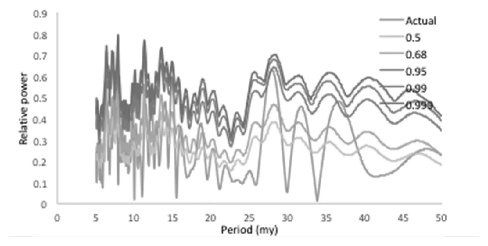

A 27.5-My underlying periodicity detected in extinction episodes of non-marine tetrapods
Key finding. Spectral and Fourier analysis of ten episodes of intensified non-marine tetrapod extinction over the past 300 million years detects a statistically significant underlying periodicity of about 27.5 million years at 99 per cent confidence, and all eight episodes coeval with marine extinctions occurred at times of Large Igneous Province eruptions.

What question did this research address?
An underlying period of roughly 26 to 27 million years had previously been detected in marine extinction episodes. If that signal reflects something happening to the whole planet, it should appear on land as well.
This paper asked whether extinction episodes among non-marine tetrapods — amphibians, reptiles, birds, and mammals — carry the same periodicity, and what coincides with them.
What did we find?
Non-marine tetrapods show at least ten distinct episodes of intensified extinction over the past 300 million years, eight of which are concurrent with known marine extinction episodes.
Circular spectral analysis and Fourier transform analysis of the ten event ages detect an underlying periodicity of approximately 27.5 million years, significant at 99 per cent confidence — consistent with the 26.4 to 27.3 million year period previously found in the marine record.
Every one of the eight coeval marine and non-marine extinction pulses coincides with the eruption of a Large Igneous Province, either a continental flood basalt or an oceanic plateau, each capable of severe environmental effects.
Three of these co-extinction episodes additionally correlate with the ages of the three largest impact craters of the past 260 million years, those at least 100 km in diameter, which are themselves capable of causing extinctions.
Why does it matter?
Finding the same period independently on land and in the sea is a genuine test rather than a restatement. A signal confined to marine fossils could reflect how marine rocks are sampled; one appearing in both records is harder to explain that way.
Associating every coeval pulse with a Large Igneous Province supplies a mechanism, which periodicity alone never does. It moves the claim from a pattern in dates to a proposal about what caused the extinctions.
Citation
Michael R. Rampino, Ken Caldeira, and Yuhong Zhu (2021). A 27.5-My underlying periodicity detected in extinction episodes of non-marine tetrapods. Historical Biology 33, 3084-3090.